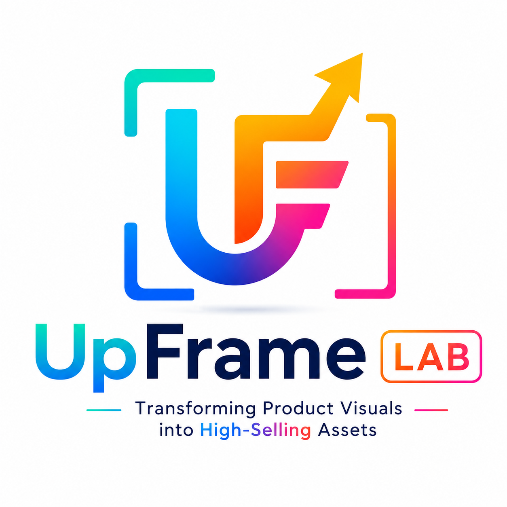

Brand Stories
UpFrame Lab, Transforming Product Visuals into High-Selling Assets

Visual Produk di Era Digital
Di era marketplace dan social media, visual menjadi salah satu faktor utama yang menentukan bagaimana sebuah produk pertama kali dipersepsikan oleh calon pembeli.
Banyak produk sebenarnya memiliki kualitas yang baik, namun terlihat biasa karena visual yang kurang optimal. Mulai dari pencahayaan, komposisi, hingga penyajian visual secara keseluruhan dapat memengaruhi kepercayaan dan daya tarik produk di platform digital.
UpFrame Lab dan Pendekatan Visual Enhancement
UpFrame Lab hadir sebagai visual enhancement practice yang membantu brand dan UMKM meningkatkan kualitas visual produk tanpa menghilangkan identitas aslinya.
Pendekatan yang digunakan tidak berfokus pada manipulasi berlebihan atau visual yang terlihat terlalu artifisial, melainkan pada peningkatan kualitas presentasi visual agar produk terlihat lebih premium, lebih profesional, dan lebih siap bersaing di era digital commerce.
Dari Foto Biasa Menjadi Aset Visual yang Menjual
Melalui AI-assisted workflow dan commercial visual direction, UpFrame Lab membantu mengubah foto produk biasa menjadi aset visual yang lebih menarik untuk marketplace, social media, hingga kebutuhan branding digital.
Workflow ini mencakup:
- Visual enhancement dengan tetap menjaga identitas produk
- Perbaikan lighting dan detail visual
- Commercial styling dan contextual enhancement
- Optimasi visual untuk marketplace dan social media
Before & After sebagai Bagian dari Visual Communication
Salah satu pendekatan utama yang digunakan adalah before-after comparison untuk menunjukkan bagaimana perubahan kecil pada visual dapat meningkatkan persepsi nilai sebuah produk.
Pendekatan ini menjadi penting karena visual bukan hanya soal estetika, tetapi juga tentang bagaimana produk terlihat lebih terpercaya dan lebih menarik di mata calon pembeli.
Visual yang Convert, Bukan Cuma Keren
UpFrame Lab tidak hanya berfokus pada visual yang menarik secara estetika, tetapi juga pada visual yang memiliki fungsi komersial dan mampu membantu produk tampil lebih standout di tengah kompetisi digital.
Dalam konteks digital commerce, visual yang baik bukan hanya tentang tampilan, tetapi juga tentang bagaimana sebuah produk lebih mudah dilihat, dipahami, dipercaya, dan akhirnya dipilih.
Official Website: UpFrame Lab
Instagram: @upframelab
Baca juga: